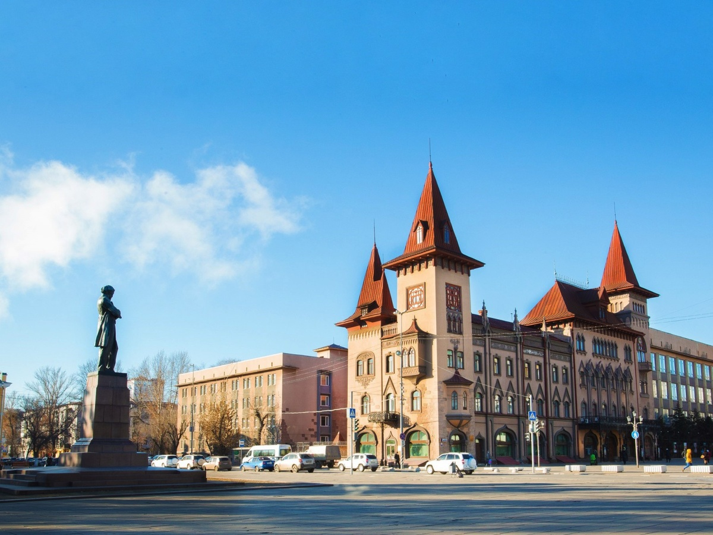

Саратовская гос. консерватория имени Л.В.Собинова
План работы консерватории на февраль месяц
План работы консерватории на февраль месяц

В Саратове из-за морозов отменяют занятия у 1-6 классов

Саратовцев призвали не бросать снег на дорогу и не парковаться в местах уборки

С понедельника, 18 января, в Саратовской области, как и по всей России, начнется массовая вакцинация населения от коронавируса

Только что в саратовском ФОК "Звездный" волейболистки "Протона" проиграли "Локомотиву" (Калининградская область) - 0:3.